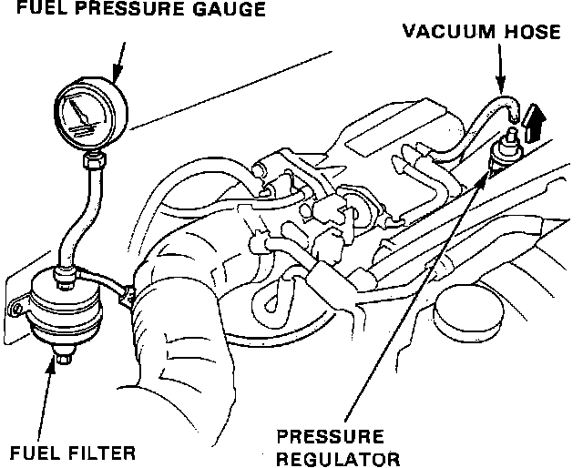
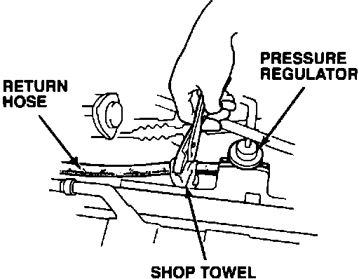

Fuel Pressure: Testing and Inspection
*** UPDATED BY TSB #89032 NOV.89WARNING: Do not smoke during the test. Keep open flames away from your work area. Be sure to relieve fuel pressure while engine is OFF.
1. Attach a pressure gauge to the service port of the fuel filter.
a. Disconnect the negative battery cable.
b. Remove the fuel tank filler cap.
Fuel Filter:

c. Use a box end wrench on the 6mm service bolt at the top of the filter, while holding the special banjo bolt with another wrench.
d. Place a rag or shop towel over the 6mm service bolt and SLOWLY loosen the 6mm service bolt one complete turn.
Pressure Regulator:

e. Remove the service bolt on the top of the fuel filter while holding the banjo bolt with another wrench and attach the fuel pressure gauge.
2. Start the engine. With the fuel pressure regulator vacuum hose disconnected, fuel pressure should be:
36 - 41 psi (2.55 - 2.85 kg/cm2)
3. If the fuel pressure is not as specified, first check the fuel pump. If the pump is okay, check the following:
a. If the pressure is HIGHER than specified:
^ Pinched or clogged fuel return line or hose.
^ Faulty pressure regulator.
^ Clogged fuel filter.
b. If the pressure is LOWER than specified:
^ Pressure regulator failure.
^ Leakage in the fuel supply line or hose.
4. Turn the engine OFF.
For the first five (5) minutes fuel pressure should stay at:
30 - 35 psi (2.10 - 2.45 kg/cm2)
For the first ten (10) minutes fuel pressure should drop no more than:
10 psi (.70 kg/cm2)
a. If the fuel pressure drops too fast, go to STEP 5.
b. If the fuel pressure remains stable, fuel pump and fuel pressure regulator are good.

5. Restart the engine, then turn it OFF and lightly pinch the fuel return hose from the fuel pressure regulator.
a. If the fuel pressure remains stable, replace the fuel pressure regulator.
b. If the fuel pressure still drops to fast, replace the fuel pump, as fuel pump check valve is bad.
6. See "COMPONENT REPLACEMENT AND REPAIR PROCEDURES" if component replacement is needed.
7. Disconnect pressure gauge from the service port of the fuel filter and reinstall service bolt. Reattach any hoses that where removed. Start engine, check for any leaks.